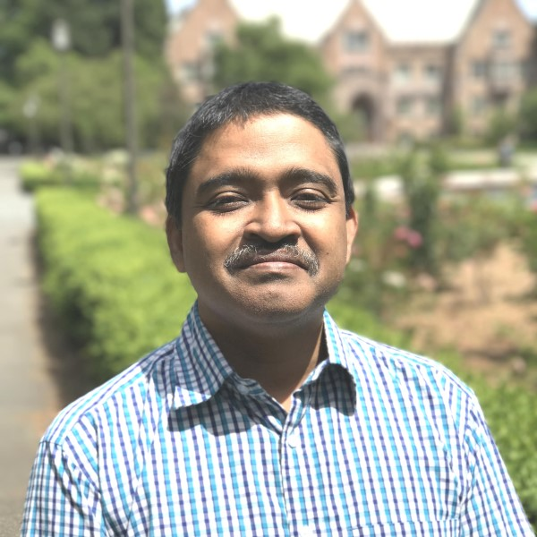
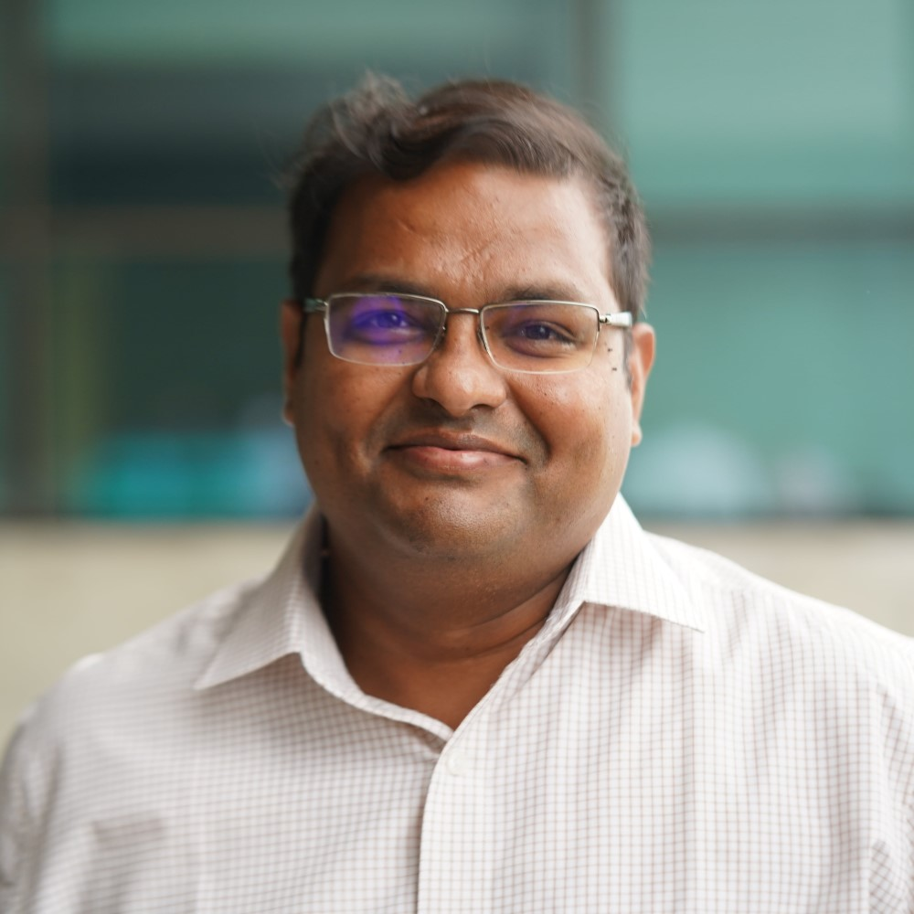

Faculty
Satish Regonda

Satish Regonda
Assistant Professor
My research interest is scientific understanding of hydrologic processes including changes in magnitude and frequency of rainfall events, floods, droughts and water resources under changing climates. This consists of analysis of climate data of different types for the past and future. In addition, I am interested in effective communication of research output via simple tools so that it benefits various stakeholders in the decision making.
floods, droughts, precipitation, climate & WRF models, hydrology, water resources, statistics
Aalok Khandekar
Aalok Khandekar
Assistant Professor
My research broadly focuses on how science, technology, and society shape each other. Much of my recent work has focused especially on environmental health governance, predominantly in urban settings. Ongoing projects include a focus on air pollution governance in Indian cities, climate resilience in smart city contexts, and cooling infrastructures in the face of rising temperatures.
climate resilence, urban cities, environment
Asif Qureshi
Asif Qureshi
Associate Professor
I am interested in assessing the impacts climate change may have on environmental/ecosystem health, and subsequently human health. The recent Nature papers explores these in terms of enhanced accumulation of toxincs in marine fishes. Other area of work is the study of elemental biogeochemical cycles, and impact of climate are important.
toxics in marine fishes, biogeochmical cycles, climate impact
Debraj Bhattacharyya
Debraj Bhattacharyya
Associate Professor
I am interested in assessing the effects (both positive and negetive) of wastewater treatment technologies and waste management practices on climate change.
wastewater treatment, waste management, sustainable development, renewable energy
Digvijay S. Pawar
Digvijay S. Pawar
Assistant Professor
I work in the area of traffic operations and modeling. Currently I am diversifying my research to estimate vehicular carbon emissions and how it varies depending on the mode of travel, traffic flow, infrastructure and driver behaviour using parametric and non parametric approaches.
Carbon emission, traffic modeling, simulation, emission modeling, driver behaviour
Ganesh M P

Ganesh M P
Associate Professor
I work in the broad area of organizational behaviour. My specific research interests related to climate change are Eco-friendly behaviours in the workplace, Frugal living, Green management practices, conservation behaviour etc. I am also interested in understanding the interaction effect of micro and macro level factors on eco-friendly behaviours among individuals and small groups.
Eco-Friendly Behaviours, Food Waste Behaviours, Reuse behaviour
Hari Priya
Hari Priya
Associate Professor
I am an anthropologist with research interests in media, health and more recently, sustainability. I have supervised a doctoral study on water from an ethnographic perspective. I am also interested in urban governance structures including digitisation. The larger interest is in using a qualitative approach to look at how people understand issues around climate and sustainability.
Media, Health, Environment, Urban Studies
Kaushik Nayak
Kaushik Nayak
Assistant Professor
Scientific understanding of evolution and meaning of life on Earth; Earth System Science; Understaning the natural (astronomical and geological) and anthropogenical causes of climate change and their interrelationships; possibility of evolution of biosphere and planetary atmosphere in other planets in and outside of solar system, Climate change on Earth over broad spatial and temporal scales.
Kishalay Mitra
Kishalay Mitra
Associate Professor
My research interest lies in the interface of data analysis and optimization. Data analysis includes data based modeling, feature extraction, clustering based unsupervized learning from time independent and time series data of any process related to climate change using AI/ML. Optimization includes optimization under uncertainty, hyper parameter optimization of AI/ML based techniques, supply chain optimization of biofuel based economy including emission effects on climate change, surrogate modeling of computationally expensive models.
Time series modeling, hyper parameter optimization, optimization under uncertainty, time series clustering, bio-supply chain, surrogate optimization
Niranjan S Ghaisas

Niranjan S Ghaisas
Assistant Professor
I am interested in studying the transport processes in the atmospheric boundary layer. Specific topics of immediate interest are (1) the interaction between surface heterogeneities and wind farms, (2) moisture transport and cloud resolving simulations, and (3) parameterization for large-scale models.
Wind energy, Atmospheric Boundary Layer, Turbulence Simulations
Pritha Chatterjee
Pritha Chatterjee
Assistant Professor
My research interest is majorly focussed on sustainable waste management with special emphasis on resource recovery from waste, in short Waste to Energy. I would like to focus on carbon emissions and carbon balance especially from trafic and different biochemical processes that can use emitted carbon as a resource to produce value added products. Briefly, my research is a part of the mitigating or taking precautionary measures to combat climate change.
Carbon balance, carbon emission, waste to energy, bioelectrochemistry, resource recovery from waste, waste management
Sai Santosh Kumar Raavi
Sai Santosh Kumar Raavi
Associate Professor
Our research group employs several optical spectroscopy techniques to study various thin film based emerging solar cell devices. These include the use of optical absorption, emission in both steady-state & time-resolved, optical radiometry measurements etc. To this end we develop various optical instrumentation with sensitive detection schemes that can be employed for both remote sensing applications required to gather/monitor various climate change parameters.
Optical Design & Instrumentation; Photophysics of Organic Solar Cell Devices
Sathya Peri

Sathya Peri
Associate Professor
My research is broadly on parallel and distributed systems. In the context of climate change, I am interested in scaling up of simulations for weather modeling using parallelization. Specifically, I am interested in scaling up of weather prediction models in the context of 3D and 4D Var models.
Scaling up & efficiency of simulations, parallelization, 3D & 4D Var
Sayak Banerjee
Sayak Banerjee
Assistant Professor
Replacing fossil oil with renewable carbon neutral biofuels and improving the efficiency of IC engine and aircraft engines while running on these biofuels will aid us in decreasing GHG emissions from the transporation sector.I seek to characterize the combustion and emission properties of novel biofuels to assess their suitability in engines, gas turbines and rockets. My research is a mix of theoretical work related to fuel chemical mechanism development as well as experimental studies to gather data for validation and testing of these novel biofuels.
biofuels, chemical kinetics, emission kinetics, combustion, flames
Shiva Ji

Shiva Ji
Assistant Professor
(1). Development of Sustainability Assessment Method for Buildings
and Products: For addressing systemic impact, there is an urgent need for developing proper design guidelines and practices;
and formulate methods for assessment of sustainability in built environment.
(2). Design of Micro Habitation for Urban
areas: To propose habitation solutions for floating population in urban settings.
(3). Lifecycle Analysis (DS 4033) :
Lifestages based impact assessment is needed for adopting methods to improve on impacts.
Sustainability Assessment Methods, Lifecycle Analysis, Micro-Habitation Design, Impact Assessment, Design for Sustainability, Systemic Analysis
Subrahmanhyam

Subrahmanhyam
Professor
Air pollution abatement- incinerators for handling large volume of flue gases, CO2 activation by conventional/unconventional approaches, Advanced oxidation process for water treatment. Photoelctrochemical cells for water splitting.